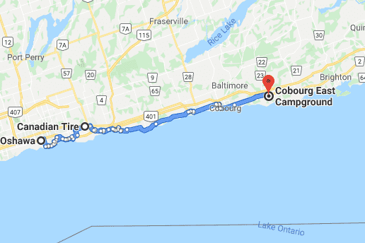

I took the bus and train from Waterloo to Oshawa. 25 GO from Waterloo to Square One, 21 GO from Square One to downtown Toronto, GO train from Downtown to Oshawa. I had biked from Waterloo to Toronto previously and did not feel like biking through the endless suburbs of Greater Toronto Area again. However, if it is your first time then why not? Toronto has pretty communities and lakeshore trails as well a big CN Tower!
I started biking around 1500 and did not know how far I would get. The bike trail was nice but oftentimes with roads cutting into the trail. Eventually, I took a wrong turn and drove through some nasty gravel where I got my first flat since Dryden, Ontario. I was very used to dealing with flats and after a few minutes was ready to pump up my spare when I realized my pump is broken! It was a great pump from MEC (Filzer Mini-Zee2 Pump), but its head that attaches to the valve somehow had unscrewed and was lost forever. I had no pump and was stuck. The nearest Canadian tire was 5km away (could be waaaaay worse). Thankfully, a senior couple of road bike tourists were biking to Oshawa back home from their trip from Ottawa. They let me borrow their pump to fix my bike. I then went to Canadian tire and got a emergency spare bike pump until I got my MEC air pump replaced at the next MEC.
Eventually, I made it to the campground. I got there at 2030, set up my tent and ate dinner in the bathroom to avoid the mosquitoes. I was charged 35 dollars. Ontario can get pricey for camping. There was another bike tent set up - the person had already retired for the night and I only saw him the next day.
